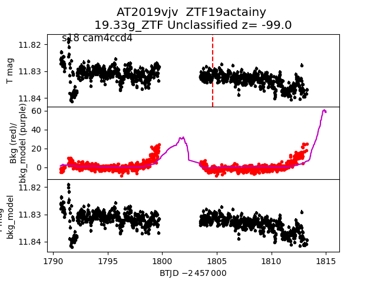
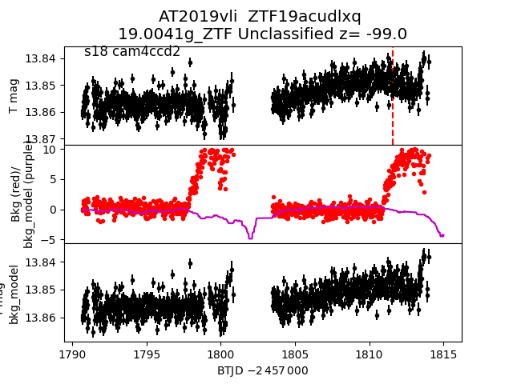
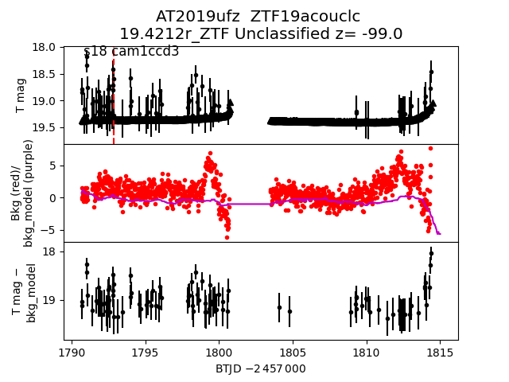

all transients in sector18 (61 total)
Each figure has three panels. The top panel shows the transient light curve, the middle panel shows the local background (estimated in an annulus), and the bottom panel shows a "background-model corrected" light curve. Details about the background model are in the README.
The vertical red line marks the time of discovery reported to TNS. Other useful metadata from TNS is in the figure title.
Note that the top and bottom panel are in magnitudes, while the middle panel is in differential flux units. The magnitudes are calibrated to the flux in the reference image used for image subtraction. Thus, flux from the host galaxy is included in these magnitudes.
3-sigma upper limits are plotted as triangles with no errorbars. A typical limiting magnitude is 19.6 in 30 minutes or 18.4 in 200 seconds (for low backgrounds).
The links allow you to download the light curve data as a text file.
More details in the README.
2019uwk
2019unq
2019vjv

2019ufu
2019uje
2019ukv
2019ulv
2019vyf
2019vda
2019uaj
2019ugy
2019uem
2019uca
2019vli

2019ubd
2019ufy
2019ule
2019wbo
2019vyj
2019ufz

2019ulr_detrended
2019uen
2019vlu
2019val
2019ugz
2019vzx
2019vmc
2019uge
2019udn
2019uyn
 2019ukd
2019ujw
2019vyk
2019vmm
2019vzi
2019vde
2019vyb
2019vbi
2019ulr
2019ugb
2019vcz
2019ubi
2019vrh
2019ulw
2019vma
2019udl
2019uwj
2019vby
2019ukb
2019ugr
2019umq
2019ujq
2019vmb
2019vzy
2019vkn
2019vlt
2019vbj
2019ukd
2019ujw
2019vyk
2019vmm
2019vzi
2019vde
2019vyb
2019vbi
2019ulr
2019ugb
2019vcz
2019ubi
2019vrh
2019ulw
2019vma
2019udl
2019uwj
2019vby
2019ukb
2019ugr
2019umq
2019ujq
2019vmb
2019vzy
2019vkn
2019vlt
2019vbj
 2019tyu
2019ubf
2019uyr
2019ujt
2019tyu
2019ubf
2019uyr
2019ujt